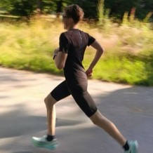

Je suis Léon, né le 17 aôut 2010, je suis passionné de sport. J'ai commencé dans un club de natation, le CND13 où j'ai finit par me passionner malgrès mon niveau assez moyen. En parallèle j'ai appris à utiliser mon corps avec la musculation au poids de corps et la calisthénie. J'ai commencé à courir de temps en temps avec ma mère il y a environ 4 ans, au début ce n'était pas gagné mais j'ai fini par me passionner pour ce sport en 2025. Et me voilà maintenant à courir 5 fois par semaine avec l'ambition de performer à haut niveau! J'aime tellement le sport que j'aimerais travailler dans ce domaine plus tard, c'est pour cela que j'ai fait mon stage de seconde dans un cabinet de kiné. Je suis maintenant licencié en club de course à pied à la SAM Paris 12.
| Course à pieds | Natation | |||
|---|---|---|---|---|
| 5km | 10km | 50m NL | 100m NL | 400m NL |
| 17'19 | 36'40 | 29"97 | 1'06 | 5'36 |
J'aime les animes (Naruto, Bleach, l'Attaque des Titans...) et les séries (Le Bureau des Légendes, Dexter...). Depuis peu j'ai aussi pris goût à la randomnée. En général, j'aime apprendre à faire de nouvelles choses comme le développement web par exemple. Je regarde beaucoup de vidéos Youtube pour en apprendre plus sur des sujets très variés. Je joue aussi aux jeux vidéos comme Minecraft ou Pokemon par exemple.